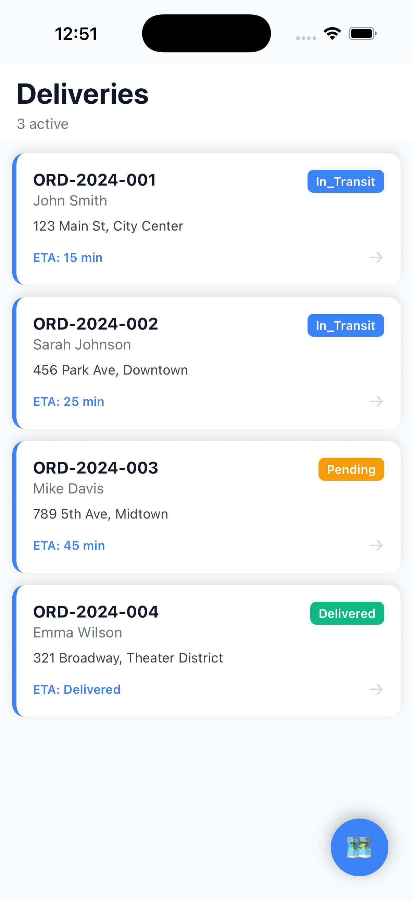
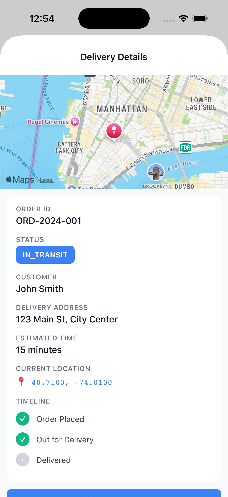
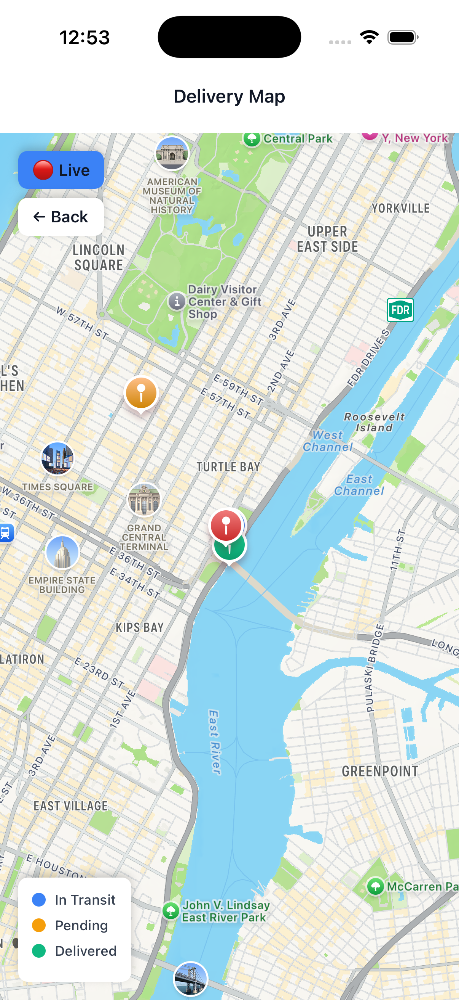

A driver app for last-mile delivery. Live GPS tracking, maps and routing, a proof-of-delivery timeline, and full offline support — built with Expo and TypeScript.
Delivery list → order details → live map. Driver markers move every 2 seconds toward their drop-off points.
The core of a delivery driver app, end to end.
Driver markers update every 2 seconds and move smoothly toward each destination.
Native maps — Apple on iOS, Google on Android — with color-coded delivery pins. No API key needed.
Deliveries cache on the device with AsyncStorage. The app works with no signal.
Permission flow and device token wired up, ready for a backend to send status updates.
Order placed → out for delivery → delivered, the proof-of-delivery pattern drivers rely on.
TypeScript strict mode across screens, services, and models. Zero compile errors.
Running on the iOS Simulator.



Screens render state. Services own the data. Types are defined once.
src/ ├── app/ Expo Router screens │ ├── index.tsx Home — delivery list │ ├── map.tsx Map — live GPS markers │ └── delivery/[id].tsx Details — order + timeline ├── services/ │ ├── deliveryService.ts REST call + offline cache │ └── notificationService.ts Push permission + token └── types/delivery.ts Shared TypeScript models
Check the cache first, then the network. Drivers lose signal — the app should not.
export async function fetchDeliveries(): Promise<Delivery[]> { // Cache first — instant load, works with no signal const cached = await AsyncStorage.getItem('deliveries'); if (cached) return JSON.parse(cached); // Then the API, and cache the result for next time const data = await api.get('/deliveries'); await AsyncStorage.setItem('deliveries', JSON.stringify(data)); return data; }
Three prerequisites, one command.
git clone https://github.com/sjunka/logistics-tracker-app.git cd logistics-tracker-app npm install npm run ios # iOS simulator npm run android # Android emulator npm start # Expo Go — scan the QR code